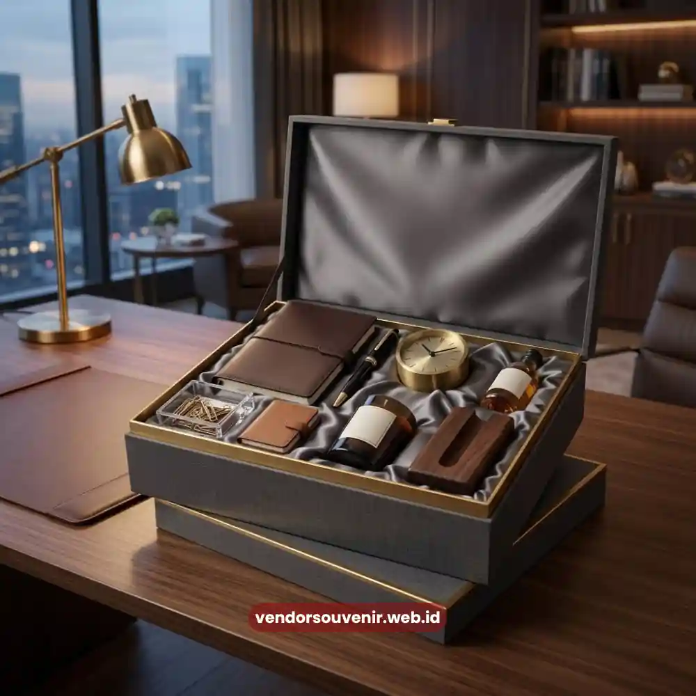

Daftar Isi
Isi hampers kantor eksklusif yang berkesan biasanya menggabungkan produk berkualitas tinggi, fungsional, dan relevan dengan gaya hidup profesional penerimanya.
Kombinasi camilan gourmet, perlengkapan kerja premium, hingga produk self-care ringan menjadi pilihan yang paling sering dipertimbangkan perusahaan saat menyusun hampers untuk klien.
Menentukan isi yang tepat akan sangat menentukan seberapa besar kesan positif yang tertanam di benak penerima setelah menerima hadiah tersebut.
- Isi hampers yang berkesan menyeimbangkan unsur fungsional dan pengalaman menyenangkan bagi penerima.
- Kombinasi camilan premium dan perlengkapan kerja adalah pilihan paling populer untuk hampers korporat.
- Produk self-care ringan cocok ditambahkan untuk memberi kesan personal yang lebih hangat.
- Kualitas kemasan turut memengaruhi bagaimana isi hampers dipersepsikan oleh klien.
- Vendor Souvenir menyediakan berbagai pilihan produk siap dikurasi menjadi hampers kantor eksklusif.
Mengapa Isi Hampers Menentukan Kesan Eksklusif di Mata Klien?
Isi hampers menjadi elemen utama yang menentukan apakah hadiah tersebut terasa istimewa atau justru terkesan seadanya.
Produk berkualitas rendah, meski dikemas semenarik apa pun, akan sulit menutupi kesan bahwa hadiah tersebut dipilih secara asal-asalan.
Klien korporat umumnya sudah terbiasa menerima berbagai jenis hadiah bisnis sepanjang tahun, sehingga standar penilaian mereka terhadap kualitas produk cenderung tinggi.
Isi hampers yang dipilih dengan cermat, baik dari sisi rasa, fungsi, maupun tampilan, akan lebih mudah diingat dan diapresiasi dibandingkan hampers dengan isi generik yang sering dijumpai di berbagai kesempatan lain.
Kombinasi Camilan dan Minuman Premium sebagai Pilihan Klasik
Camilan gourmet, cokelat premium, serta kopi atau teh pilihan tetap menjadi kombinasi favorit dalam menyusun isi hampers kantor eksklusif.
Produk kategori ini memiliki keunggulan karena bisa langsung dinikmati bersama keluarga atau rekan kerja di kantor, sehingga pengalaman menerima hadiah terasa lebih hangat dan personal.
Pemilihan produk dengan kemasan menarik juga membantu memperkuat kesan premium, terlebih jika rasa dan kualitasnya memang sepadan dengan tampilannya.
Kombinasi manis dan gurih, misalnya cokelat dipadukan dengan camilan gurih premium, sering menjadi pilihan yang aman namun tetap berkesan mewah.

Isi Hampers Perlengkapan Kerja
Perlengkapan Kerja Premium yang Fungsional dan Berkelas
Selain kategori makanan, perlengkapan kerja premium seperti alat tulis berkualitas, tumbler, notebook eksklusif, hingga organizer meja juga banyak dipilih karena manfaatnya bisa dirasakan setiap hari.
Produk fungsional semacam ini memiliki keunggulan tersendiri karena penerima akan terus menggunakannya dalam aktivitas kerja sehari-hari, sehingga kesan terhadap pemberi hadiah pun bertahan lebih lama.
Pemilihan warna dan desain yang netral namun tetap elegan menjadi kunci agar produk perlengkapan kerja ini cocok digunakan oleh berbagai kalangan profesional, baik laki-laki maupun perempuan, tanpa terkesan terlalu kasual atau justru terlalu formal.
Sentuhan Self-Care untuk Kesan yang Lebih Personal
Menambahkan produk self-care ringan seperti lilin aromaterapi, perawatan tangan, atau aksesori relaksasi kecil dapat memberi dimensi baru pada hampers kantor eksklusif.
Kategori ini cocok disisipkan untuk momen apresiasi khusus, misalnya setelah penyelesaian proyek besar, karena memberi pesan bahwa perusahaan turut memperhatikan kesejahteraan personal klien, bukan sekadar relasi bisnis semata.
Kombinasi ini juga membantu hampers terasa lebih hangat dan tidak melulu berorientasi pada fungsi kerja, sehingga penerima merasa dihargai secara lebih menyeluruh.
Bagaimana Menyusun Kombinasi Isi Hampers agar Terlihat Premium?
Kombinasi isi hampers akan terlihat lebih premium apabila disusun dengan mempertimbangkan keseimbangan warna, tekstur, dan fungsi dari setiap produk yang dipilih.
Susunan yang terlalu penuh justru dapat membuat hampers terlihat berantakan, sementara susunan yang terlalu minim berisiko terkesan kurang berisi.
Pemilihan tiga hingga lima produk utama yang saling melengkapi, dipadukan dengan detail kemasan yang rapi, umumnya sudah cukup untuk menciptakan kesan mewah tanpa perlu memenuhi kotak hampers secara berlebihan.
Konsistensi tema, misalnya tema kerja produktif atau tema relaksasi, juga membantu isi hampers terasa lebih terkurasi dan tidak asal digabungkan.
Isi hampers kantor eksklusif yang tepat mampu menyampaikan pesan apresiasi sekaligus memperkuat kesan profesional perusahaan Anda di mata klien.
Perpaduan camilan premium, perlengkapan kerja fungsional, dan sentuhan self-care menjadi kombinasi yang layak dipertimbangkan untuk hadiah bisnis Anda selanjutnya.

Solusi Vendor Souvenir
Butuh Bantuan Menyusun Isi Corporate Hampers?
Tim ahli kami siap membantu Anda menyusun paket hadiah eksklusif yang menarik.
Pilihan barang akan disesuaikan dengan ketersediaan budget dan kebutuhan Anda.
Seluruh desain kemasan akan kami selaraskan dengan identitas visual perusahaan Anda.
Dapatkan penawaran harga terbaik untuk pesanan massal!
FAQ Isi Hampers Kantor Eksklusif
Apa saja kategori produk yang umum dijadikan isi hampers kantor eksklusif?
Kategori yang umum digunakan meliputi camilan dan minuman premium, perlengkapan kerja fungsional, serta produk self-care ringan yang bisa dikombinasikan sesuai kebutuhan.
Apakah isi hampers perlu disesuaikan dengan profil klien penerima?
Sebaiknya iya, karena isi yang relevan dengan gaya hidup atau kebutuhan klien akan terasa lebih personal dan mudah diapresiasi dibandingkan isi yang terlalu umum.
Berapa jumlah produk ideal dalam satu hampers agar terlihat premium?
Kombinasi tiga hingga lima produk utama umumnya sudah cukup untuk menciptakan kesan mewah tanpa membuat kemasan terlihat penuh sesak.
Maroon Souvenir
Partner Corporate Gift terpercaya di Indonesia. Berpengalaman melayani ratusan perusahaan sejak 2018.
Lihat Portofolio Kami